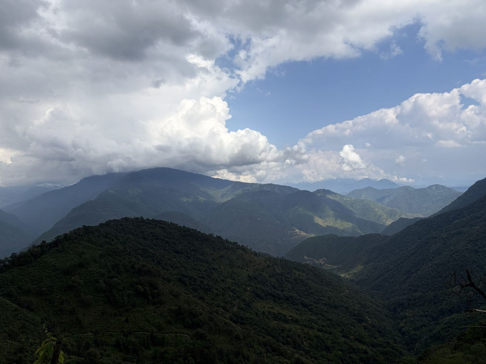

A small bird with a long name.
The Bugun liocichla was first noticed by birdwatchers in 1995 and named by scientists in 2006. It is critically endangered. Very few exist, and nearly all of them live in one small patch of forest, on land our people hold.
The patrol team’s latest count is [the latest count from the patrol team].
The bird is not at Bichom. Its forest is on the Singchung side, about 14 km from Bichom in a straight line. The road is longer. Bird days begin there, with a guide.
We decided to keep it. In January 2017 our forest above Singchung became the Singchung Bugun Village Community Reserve, 17 square kilometres. Young Bugun patrollers walk it.
You will meet the bird only with a Bugun guide. We do not play recorded calls to pull it out, and we do not tell anyone where it nests. If it does not show, the forest is still worth the walk.
Other birds you may meet: Blyth’s tragopan, Ward’s trogon, beautiful nuthatch, fire-tailed myzornis. Guides usually take groups from October to May.
Our guides meet you at [meeting point, and how far it is from Bichom].
Ask us where our guides meet you.
Our guides: [names, with their yes].
Sources: Mongabay, 2018 (the dates, the reserve, the patrollers); Dialogue Earth (the other birds, the guiding season).